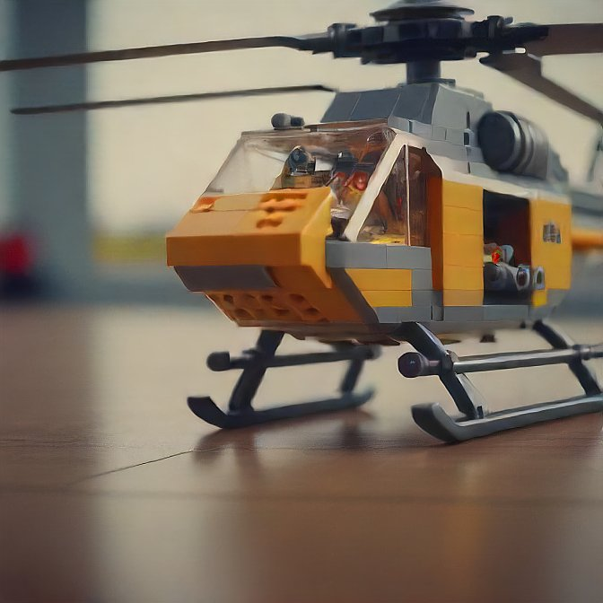
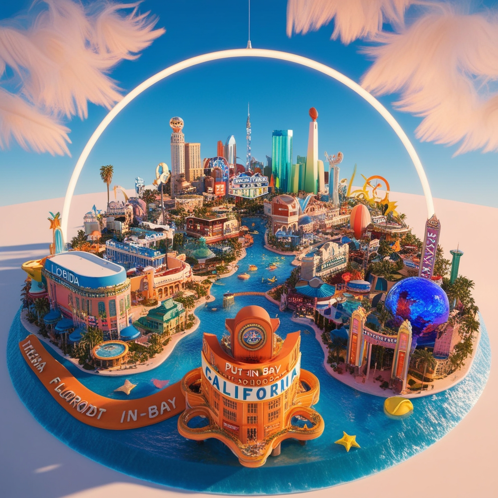
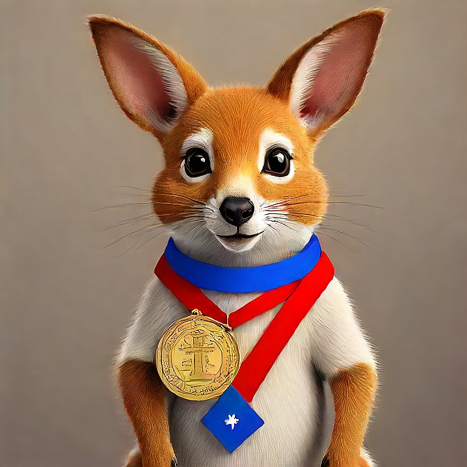

Biografia
Artur nasceu no dia 17 de dezembro de 2006, desde pequeno demonstrava bastante interesse em coisas que usava muito de sua parte cognitiva como resolver desafios matemáticos ou montar LEGO.
Artur gosta e sempre gostou de viajar, o destino que ele mais diz que gosta é os Estados Unidos onde o mesmo já visitou Nevada, Califórnia, Texas e Flórida.
Conforme Neves foi crescendo ele descobriu sua paixão por matemática e desde sempre demonstrou habilidades excepcionais na matéria chegando a conseguir duas medalhas de prata e uma de bronze na OBMEP e um primeiro lugar no Canguru da matemática.
Artur, desde pequeno, mora em Jaraguá do Sul, uma cidade que sempre foi seu lar e palco de muitas de suas memórias mais queridas. Ele começou seus estudos na Escola Rodolpho Dornbusch, onde deu os primeiros passos na sua jornada acadêmica. Foi lá que ele descobriu o prazer pelo aprendizado e desenvolveu habilidades fundamentais que lhe serviriam para o futuro. Após concluir os estudos na Rodolpho Dornbusch, Artur ingressou no SESI SENAI, onde sua paixão pela mecatrônica e robótica começou a florescer. No SESI SENAI, ele teve acesso a uma educação técnica de qualidade, que lhe proporcionou uma visão mais ampla e prática sobre as tecnologias emergentes e o potencial delas para transformar o mundo. Foi nesse ambiente estimulante que Artur encontrou sua verdadeira vocação. A mecatrônica e a robótica não eram apenas disciplinas acadêmicas para ele, mas sim áreas nas quais ele se sentia verdadeiramente realizado e inspirado. Com dedicação e entusiasmo, ele mergulhou de cabeça nesses campos, participando de projetos, competições e eventos que lhe permitiram aplicar seus conhecimentos e habilidades de maneira prática e inovadora. A história de Artur é um testemunho do poder da educação e da descoberta pessoal. Desde os primeiros dias em Jaraguá do Sul até suas conquistas no SESI SENAI, ele trilhou um caminho de aprendizado contínuo e paixão pela tecnologia, que certamente continuará a guiá-lo em sua jornada profissional e pessoal.